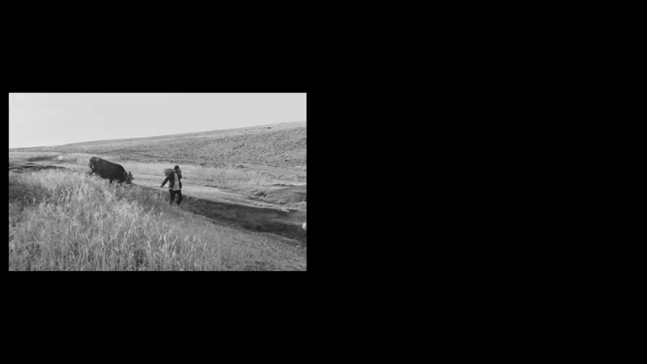

Cow, Disturbed
Close ×
Video
Duration: 00:06:28
This video explores queerness as a site of cultural critique taking Dariush Mehrjui’s film گاو (Cow), adapted from Gholam Hossein Saedi’s Fear and Trembling, as its point of departure. In the original story, the protagonist, Mashahdi Hassan, slowly transforms into his cow after the villagers of Boloor instill in him a deep fear of loss. His attachment to possession and the threat of having it taken away, becomes the catalyst for his unraveling.
In this work, Boloor becomes a metaphor for difference, otherness, and queerness, exposing the fear that normative social structures hold toward transformation and rupture.